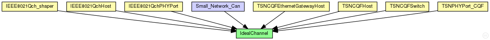

This documentation is released under the Creative Commons license
This documentation is released under the Creative Commons license(no description)
The following diagram shows usage relationships between types. Unresolved types are missing from the diagram. Click here to see the full picture.
The following diagram shows inheritance relationships for this type. Unresolved types are missing from the diagram. Click here to see the full picture.

| Name | Type | Description |
|---|---|---|
| IEEE8021Qch_shaper | compound module | (no description) |
| IEEE8021QchHost | compound module |
实现了CQF的Host，本质上是IEEE802.1Qbv的拓展 |
| IEEE8021QchPHYPort | compound module |
实现了CQF的物理层+数据链路层的端口 |
| TSNCQFEthernetGatewayHost | compound module |
使用在gateway中的ethernet模块，由于TSN模块需要与Switch中模块相同，故使用该模块 |
| TSNCQFHost | compound module | (no description) |
| TSNCQFSwitch | compound module | (no description) |
| TSNPHYPort_CQF | compound module | (no description) |
| Name | Type | Description |
|---|---|---|
| Small_Network_Can | network | (no description) |
| Name | Value | Description |
|---|---|---|
| class | cIdealChannel |
channel IdealChannel { @class(cIdealChannel); }
This documentation is released under the Creative Commons license